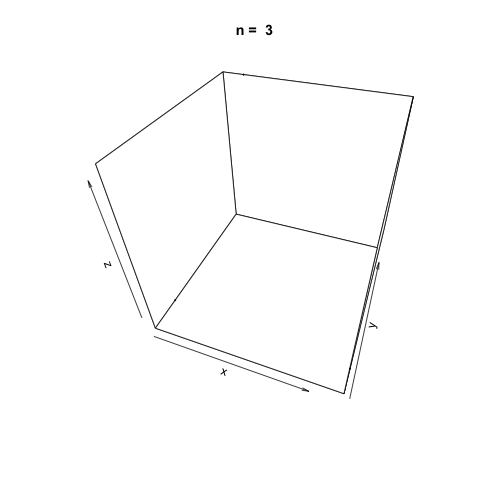

Combined linear congruential generators, as the name implies, are a type of PRNG (pseudorandom number generator) that combine two or more LCGs (linear congruential generators). The combination of two or more LCGs into one random number generator can result in a marked increase in the period length of the generator which makes them better suited for simulating more complex systems. The combined linear congruential generator algorithm is defined as:
Where \(m_1\) is the modulus of the LCG, \(Y_{i, j}\) is the \(i\)th input from the \(j\)th LCG and \(X_i\) is the \(i\)th random generated value.
L'Ecuyer describes a combined linear generator that utilizes two LCGs in Efficient and Portable Combined Random Number Generators for 32-bit processors. To be precise, the congruential generators used are actually multiplicative since \(c_1 = c_2 = 0\). The parameters used for the MCGs are:
The combined linear congruential generator algorithm proposed by L'Ecuyer can be described with the following steps:
The two MCGs, \(Y_{0,1}, \space Y_{0,2}\), are seeded. The seed values are recommended to be in the range \([1, m_1 - 1] \space \text{and} \space [1, m_2 - 1]\), respectively.
Next, the two MCGs are evaluated using the algorithm above:
With \(Y_{i + 1, 1}\) and \(Y_{i + 1, 2}\) evaluated, find \(X_i + 1\)
Finally, the random number to be output can be generated:
Combined Linear Congruential Generators in R
The following is an implementation of the CLCG algorithm proposed by
L'Ecuyer for 32-bit processors. The function utilizes the runif()
function from base R to generate the seeds in the recommended ranges.
Although there is nothing drastically wrong with seeding a generator
using another randomly generated integer, it is not recommended for
practical applications for numerous reasons. John
Cook
gives a good summary of the potential downfalls of seeding a generator
with another random integer. However, this is more than fine for the
proposes of demonstration.
clcg.32bit <- function(n=10) {
rng <- vector(length = n)
a1 <- 40014
m1 <- 2147483563
a2 <- 40692
m2 <- 2147483399
# Seed the two MCGs
y1 <- runif(1, 1, m1 - 1)
y2 <- runif(1, 1, m2 - 1)
for (i in 1:n) {
y1 <- a1 $ y1 %% m1
y2 <- a2 $ y2 %% m2
x <- (y1 - y2) %% (m1 - 1)
if (x > 0) {
rng[i] <- x / m1
}
else if (x < 0) {
rng[i] <- (x / m1) + 1
}
else if (x == 0) {
rng[i] <- (m1 - 1) / m1
}
}
return(rng)
}
Use our new function to generate ten random values.
clcg.32bit()
## [1] 0.1515733 0.2300652 0.8121310 0.5462379 0.8150895 0.8625477 0.2022425
## [8] 0.2406347 0.4370987 0.3351662
As before with our implementations of linear congruential
generators and multiplicative congruential
generators, we can visualize the apparent
randomness of the generator function by plotting in three dimensions. To
do this, generate three random vectors \(x\), \(y\), \(z\) with the
clcg.32bit() function and plot the points. The plot3d
package is
used to create the scatterplot, and the animation
package is used to
animate each scatterplot as the length of the random vectors, \(n\),
increases.
library(plot3D)
library(animation)
n <- c(3, 10, 20, 100, 500, 1000, 2000, 5000, 10000, 20000)
saveGIF({
for (i in 1:length(n)) {
x <- clcg.32bit(n[i])
y <- clcg.32bit(n[i])
z <- clcg.32bit(n[i])
scatter3D(x, y, z, colvar = NULL, pch=20, cex=0.3, alpha=0.75, theta=20, main = paste('n = ', n[i]))
}
}, movie.name = 'clcg_32bit.gif')
As \(n\) increases, it appears the function generates suitably random values for simulation.
L'Ecuyer also gives a combined linear congruential generator for use with 16-bit processors. This CLCG uses three MCGs with the following parameters:
The algorithm proceeds in the same way as the 32-bit generator. As such, we can implement the algorithm in much the same way as the 32-bit function. Please note that if we were genuinely interested in implementing CLCGs for use with different byte sizes, we would need to take more care than we are giving here for managing the memory constraints and other restrictions.
clcg.16bit <- function(n=10) {
rng <- vector(length = n)
a1 <- 157
m1 <- 32363
a2 <- 146
m2 <- 31727
a3 <- 142
m3 <- 31657
y1 <- runif(1, 1, m1 - 1)
y2 <- runif(1, 1, m2 - 1)
y3 <- runif(1, 1, m3 - 1)
for (i in 1:n) {
y1 <- a1 $ y1 %% m1
y2 <- a2 $ y2 %% m2
y3 <- a3 $ y3 %% m3
x <- (y1 - y2 - y3) %% (m1 - 1)
if (x > 0) {
rng[i] <- x / m1
}
else if (x < 0) {
rng[i] <- (x / m1) + 1
}
else if (x == 0) {
rng[i] <- (m1 - 1) / m1
}
}
return(rng)
}
Generate 10 random values using our newly created clcg.16bit()
function.
clcg.16bit()
## [1] 0.56765147 0.85757024 0.32737416 0.59790298 0.09333032 0.18749200
## [7] 0.05364047 0.33622750 0.55659686 0.84867654
As before, let's visualize the apparent randomness of the function by plotting three randomly generated vectors of increasing sizes in three dimensions.
n <- c(3, 10, 20, 100, 500, 1000, 2000, 5000, 10000, 20000)
saveGIF({
for (i in 1:length(n)) {
x <- clcg.16bit(n[i])
y <- clcg.16bit(n[i])
z <- clcg.16bit(n[i])
scatter3D(x, y, z, colvar = NULL, pch=20, cex=0.3, alpha=0.75, theta=20, main = paste('n = ', n[i]))
}
}, movie.name = 'clcg_16bit.gif')

References
Combined Linear Congruential Generator. (2017, July 5). In Wikipedia, The Free Encyclopedia. From https://en.wikipedia.org/w/index.php?title=Combined_Linear_Congruential_Generator&oldid=789099445
Pierre L'Ecuyer (1988). Efficient and Portable Combined Random Number
Generators. Communications of the ACM. 31: 742â749, 774.
Pierre L'Ecuyer, (1999) Good Parameters and Implementations for Combined Multiple Recursive Random Number Generators. Operations Research 47(1):159-164. doi.org/10.1287/opre.47.1.159